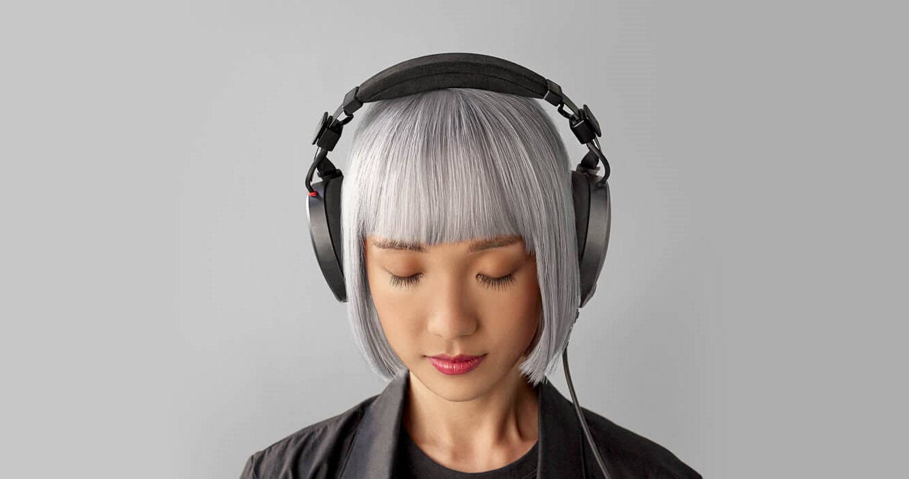

The RØDECaster Pro II is the world's most powerful all-in-one audio solution for streamers, podcasters, musicians, and creators. Take your content to the next level.
LEARN MORE >
Your Search For The Perfect Headphones Is Over
Experience sound like never before with the NTH-100s. Exceptional sonic performance, superior comfort and iconic looks that inspires creativity.
LEARN MORE >

Studio-Quality Recording, Made Simple
The NT-USB is a studio-quality USB condenser microphone that offers impeccable audio, elegant looks and premium features, all in an easy-to-use form factor, the NT-USB will have you sounding like a pro in seconds.
LEARN MORE >
Broadcast-grade Dynamic Microphone
Give your voice that rich, broadcast sound with the PodMic. Perfect for livestreaming, voice-over, podcasting and gameplay.
LEARN MORE >
Next Generation Wireless Audio
The Wireless GO II is the world’s most powerful and versatile wireless microphone. With an unparalleled feature set and ultra-compact form factor, this is next generation wireless audio for every creator.
LEARN MORE >
Compact Sound, Incredibly Powerful
The NT-USB Mini brings pristine studio sound to a compact USB microphone, and with RØDE Connect unlocking more power, more features and more control, it’s the perfect recording solution for podcasters, gamers and streamers.
LEARN MORE >
Explore The RØDE Range
Latest From The RØDE Blog
The Difference Between Large-Diaphragm and Small-Diaphragm Condenser Microphones
We explore the difference between large- and small-diaphragm condenser microphones, and what each is best used for.
What is a Condenser Microphone and When to Use One
Learn more about the different types of condenser mics, how they work and the best applications for using them.
Firmware Version 1.0.7 for the RØDECaster Pro II is Available Now
Firmware version 1.0.7 includes key feature additions, such as custom routing for USB and Bluetooth outputs, and more.
The RØDECaster Pro II Is Shipping Now
The world’s most powerful all-in-one audio solution for content creators is now available worldwide.


.jpg)